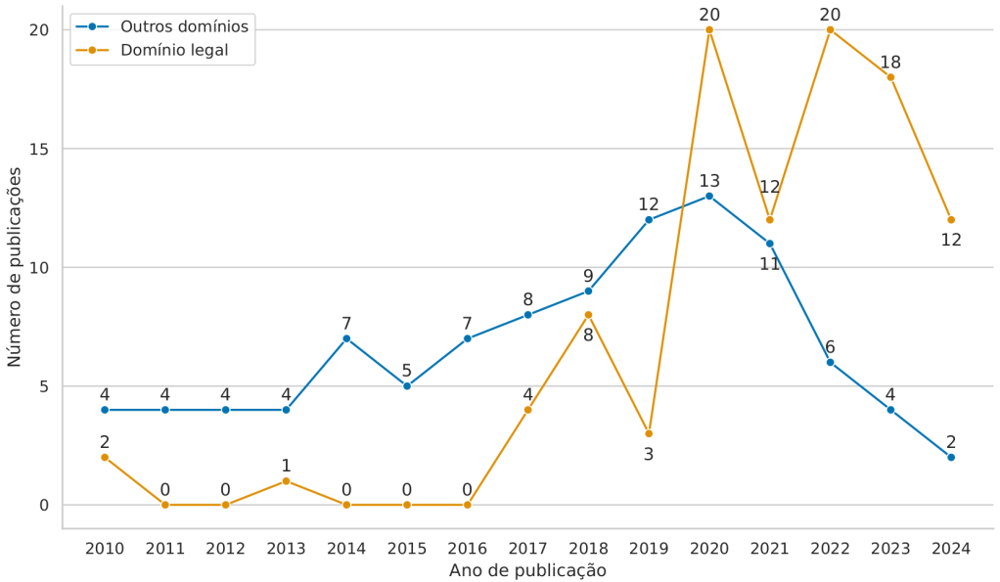
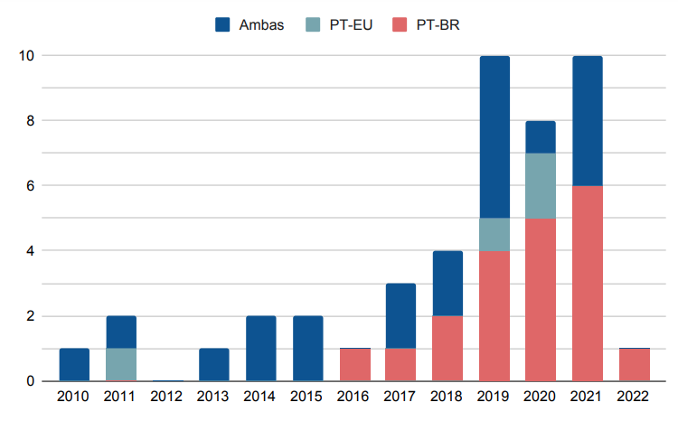
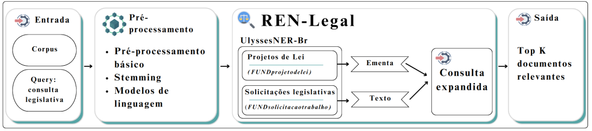

13 Reconhecimento de Entidades Nomeadas no Domínio Legal
Um Panorama para a Língua Portuguesa
13.1 Introdução
Neste capítulo, são apresentadas as principais iniciativas na área de reconhecimento de entidades nomeadas no domínio legal, com foco na língua portuguesa. São descritos os principais corpora, modelos de linguagem neurais e de larga escala, além de exemplo de aplicação de entidades nomeadas na recuperação de documentos legislativos.
O Capítulo Extração de Informação apresenta conceitos relacionados à Extração de Informação (EI), que é, normalmente, dividida em diversas tarefas de interesse, com foco no tipo de informação a ser extraída do texto, entre elas, o Reconhecimento de Entidades Nomeadas (REN), a Extração de Relações (ER) e a Extração de Eventos (EE). Com relação ao REN, são apresentadas informações históricas, conceituação formal, abordagens para rotulação, métricas de avaliação, principais entidades e corpora, e estado da arte dos modelos de REN para a língua portuguesa.
O Capítulo PLN no Direito, por sua vez, apresenta diferentes aspectos associados ao Processamento de Linguagem Natural (PLN) na esfera do Direito. As tarefas de PLN envolvidas, em geral, são a análise textual e a representação de conteúdos por meio de diferentes técnicas, mas há várias abordagens e estudos voltados para diferentes finalidades. São descritos desafios e perspectivas no âmbito de trabalhos que exploram materiais produzidos em português, considerando somente o cenário do Direito brasileiro. Também, é exemplificada uma aplicação de análise de sentimentos em Direito.
13.2 Contextualização
Nos últimos anos, houve um grande crescimento no uso de técnicas de PLN para a área jurídica, que produz uma grande quantidade de dados no formato de texto (Zhong et al., 2020). Em várias atividades do meio jurídico, é necessário extrair informações desses textos. No entanto, a crescente quantidade de documentos legais, associada ao tamanho desses documentos, torna muitas vezes impraticável sua análise manual. A Inteligência Artificial (IA), em particular PLN, provê técnicas que podem automatizar a extração de conhecimento de textos. Por conta disso, PLN é cada vez mais utilizada para lidar com a grande quantidade de documentos produzidos pelas organizações legislativas e judiciais. Em muitos países, há um considerável acúmulo de casos jurídicos a serem processados e o número de documentos gerados é enorme (Kapoor et al., 2022). A Câmara dos Deputados brasileira, desde sua fundação, já processou mais de 144 mil projetos de lei e tem processado aproximadamente 30 mil projetos de lei a cada ano (Brandt, 2020). Para cada projeto, diversos documentos são produzidos e agregados, em diferentes etapas, até sua discussão e votação.
O levantamento anual do Conselho Nacional de Justiça revelou um aumento significativo no número de projetos de IA no Poder Judiciário Brasileiro em 20231, como parte do Programa Justiça 4.0. Em comparação com 2022, houve um crescimento de 17% no número de tribunais com projetos de IA. Das 140 soluções tecnológicas mapeadas, 63 já estão em uso ou aptas a serem utilizadas e 46 estão em fase final de desenvolvimento. Os principais motivadores para o uso da IA pelos tribunais incluem o aumento da produtividade, a busca por inovação, a melhoria na qualidade dos serviços e a redução dos custos. Em 2018, em parceira com a Universidade de Brasília (UnB), o Supremo Tribunal Federal (STF) desenvolveu o Victor (Hartmann Peixoto, 2020), uma IA que separa e classifica as peças processuais mais usadas nas atividades do STF e identifica os temas de repercussão geral de maior incidência. Além do projeto Victor, o STF desenvolveu a VitorIA que identifica, no acervo do Tribunal, os processos que tratam do mesmo assunto e os agrupa automaticamente, e a RAFA 2030 (Redes Artificiais Focadas na Agenda 2030), uma IA, lançada em 2022, para apoiar a classificação de processos de acordo com os Objetivos de Desenvolvimento Sustentável da Agenda 2030 da Organização das Nações Unidas2.
Em 2019, a Câmara dos Deputados lançou o Ulysses, um conjunto institucional de iniciativas de IA com o propósito de aumentar a transparência, melhorar a relação da Câmara com os cidadãos e apoiar a atividade legislativa com análises complexas (Almeida, 2021). Inicialmente, o Ulysses analisava, classificava e distribuía os pedidos dos parlamentares entre as 22 áreas de conhecimento da Consultoria Legislativa da Câmara. Posteriormente, em parceria com pesquisadores do Instituto de Ciências Matemáticas e de Computação da Universidade de São Paulo (ICMC-USP), novos algoritmos3 foram desenvolvidos, permitindo a busca por documentos similares (Albuquerque et al., 2024; Souza et al., 2021; Vitório et al., 2022, 2024), análise do posicionamento de cidadãos sobre um projeto de lei em tramitação (Maia et al., 2022; Silva et al., 2021), reconhecimento de entidades relevantes para o domínio legislativo (Albuquerque et al., 2022, 2023a; Costa et al., 2022), além da construção de modelos de linguagem específicos para o domínio legislativo (Garcia et al., 2024) e um grande corpus, o Ulysses Tesemõ (Siqueira et al., 2024), composto por mais de 3,5 milhões de arquivos, totalizando 30,7 GiB de texto bruto, coletados de 159 fontes que abrangem dados judiciais, legislativos, acadêmicos, notícias e outros documentos relacionados.
O domínio legal abrange uma grande variedade de textos jurídicos, incluindo legislação, jurisprudência e trabalhos acadêmicos (Maxwell; Schafer, 2008). A natureza dos documentos legais também acrescenta um novo desafio às aplicações de PLN que pode não estar presente em outros domínios, pois esses documentos são, tipicamente, muito longos, desestruturados, contém ruídos, e são escritos usando jargão e uma linguagem específica do domínio (Kapoor et al., 2022). Há iniciativas em várias tarefas de PLN e IA, como: Recuperação de Informação Legal (Chalkidis et al., 2021; Souza et al., 2021), Sumarização de Texto (Kornilova; Eidelman, 2019), Previsão de Julgamentos (Chalkidis et al., 2019), Segmentação Semântica (Malik et al., 2021) e Reconhecimento de Entidades Nomeadas (Albuquerque et al., 2022; Alles, 2018; Araujo et al., 2018; Castro, 2019; Costa et al., 2022).
Legal Named Entity Recognition ou reconhecimento de entidades nomeadas no domínio legal (REN-Legal), tem como objetivo detectar e rotular todas as instâncias de entidades nomeadas específicas, juridicamente relevantes, dentro de textos legais (Bonifacio et al., 2020; Cabrera-Diego; Gheewala, 2023; Cardellino et al., 2017). Considerando que os relatórios jurídicos contêm um grande número de termos e terminologias complexas, identificar entidades é um aspecto crucial na organização de informações e conhecimento dentro do domínio. É uma tarefa com grande importância, pois consiste no primeiro passo da análise semântica do texto, com potencial aplicação em diversas tarefas. Contudo, estudos sobre REN-Legal para a língua portuguesa evidenciam que os modelos utilizados para este idioma enfrentam desafios não encontrados para outros idiomas, o que pode ser explicado pelo baixo volume de corpora, ferramentas e modelos pré-treinados desenvolvidos para a língua portuguesa (Albuquerque et al., 2023b; Castro, 2019), necessitando de um esforço maior, principalmente no desenvolvimento de recursos e abordagens, como ocorre com a língua inglesa (Pirovani, 2019).
13.3 Iniciativas de REN-Legal
A revisão sistemática apresentada por Firdaus Solihin; Makarim (2021) mapeou 4.798 pesquisas sobre Extração de Informação no domínio legal, entre janeiro de 1990 e dezembro de 2020, extraindo dados de 107 estudos selecionados. Os autores relatam que 53% das pesquisas utilizaram corpora compostos de decisões judiciais, 23% de leis ou regulações, 21% utilizaram outros documentos legais, e os demais 4% utilizaram corpora abertos pré-existentes. Os estudos mostraram que as pesquisas utilizando REN-Legal tiveram maior destaque (acima de 60 estudos), ressaltando sua importância para a EI.
Para se ter uma ideia do avanço do estado da arte, para a edição deste capítulo foi executada uma pesquisa amostral das publicações sobre REN-Legal utilizando o Google Scholar4. Foram utilizadas duas strings de busca sobre REN, uma sem informação de domínio, e a outra com o domínio legal5. Para nossos propósitos, foram selecionados arbitrariamente os 100 primeiros artigos de cada resultado, filtrados pelo título e pelo resumo, no período de 2010 a 20246. A Figura 13.1 apresenta o resultado amostral do avanço das pesquisas sobre REN-Legal, principalmente a partir de 2017, ressaltando a importância dada a este domínio nos últimos anos.

Além da natureza global e complexidade documental próprias do domínio, alguns fatores como diferenças culturais, idioma, linguagem, padronização de documentos, entre outros, podem ser determinantes para o sucesso das aplicações desenvolvidas. Também é preciso considerar seus subdomínios jurídicos existentes (e.g., processual, penal, trabalhista, previdenciário etc.), e suas esferas de atuação (e.g., tipos de tribunais, jurisdição etc.) (Akbik et al., 2016; Cabrera-Diego; Gheewala, 2023; Firdaus Solihin; Makarim, 2021). Neste sentido, alguns trabalhos se destacam por sua relevância para as tarefas de REN-Legal.
Dale; Mazur (2007) exploram o uso de aprendizado de máquina supervisionado para desambiguação de entidades em documentos legais, utilizando 13.460 documentos em inglês da Bolsa de Valores Australiana, aplicados na estimação de frequência de conjunções de entidades candidatas. Foram extraídos 16 tipos de entidades utilizando anotação automática, com desambiguações resolvidas manualmente. Dos nove algoritmos de aprendizagem avaliados, o classificador IBk7 (baseado no algoritmo K-nearest neighbors (KNN) (Aha et al., 1991)) obteve o melhor resultado, com 84% de medida F1.
Dozier et al. (2010) utilizaram REN para identificação de informações legais em 43.936 documentos de processos legais norte-americanos. Os documentos foram anotados manualmente utilizando cinco entidades legais, classificadas através de abordagens híbridas baseadas em pesquisa (utilizando listas de entidades de interesse), regras contextuais (com regras dedutivas) e modelos estatísticos (com indicadores ponderados). O classificador Support Vector Machine (SVM) (Cortes; Vapnik, 1995) obteve o melhor resultado com 95% de medida F1.
Chalkidis et al. (2017) exploram a automação da extração de elementos contratuais, construindo um corpus de \(\sim\)3.500 contratos em inglês, manualmente anotados com 11 entidades, das quais três são do domínio legal. Utilizando regras manuais e classificadores lineares como Regressão Logística (Tolles; Meurer, 2016) e SVM, os melhores resultados foram alcançados através de um método híbrido de aprendizado de máquina e regras pós-processamento, com medida F1 acima de 84%. Posteriormente, o corpus desenvolvido foi utilizado para gerar vetores de palavras utilizando \(\sim\)750.000 contratos (Chalkidis; Androutsopoulos, 2017), com melhorias utilizando os modelos Long Short-term Memory (LSTM) (Hochreiter; Schmidhuber, 1997), Bidirectional LSTM (BiLSTM) (Schuster; Paliwal, 1997) e Conditional Random Field (CRF) (Lafferty et al., 2001). Os resultados obtidos alcançaram medida F1 de 87% na classificação por tokens, e 88% na identificação de elementos nos contratos.
Chalkidis et al. (2020) exploram a adaptação do modelo Bidirectional Encoder Representations from Transformers (BERT) (Devlin et al., 2019) para o domínio legal, através de estratégias de pré-treinamento e ajuste fino do modelo em um corpus de 354.621 textos legais em inglês, composto por leis, decisões de tribunais e contratos de diversas fontes. Para as tarefas de REN, foram utilizados dados de cerca de 2.000 contratos, chamado de Contracts-NER. As entidades utilizadas foram as mesmas dos trabalhos anteriores dos autores. O estudo conclui que o modelo LEGAL-BERT, especialmente uma versão menor (LEGAL-BERT-small), foi eficaz para tarefas específicas do domínio legal, apresentando desempenho comparável a modelos maiores.
Pilán et al. (2022) apresentam o corpus TAB (Text Anonymization Benchmark), desenvolvido para a anonimização de dados pessoais utilizando REN. Composto por 1.268 casos judiciais em inglês do Tribunal Europeu dos Direitos Humanos, o corpus foi anotado manualmente utilizando oito entidades universais. No processo de anonimização, entidades marcadas como sensíveis foram categorizadas de acordo com informações como crença filosófica, opinião política, entre outras. Juntamente com o corpus, a pesquisa introduz três métricas específicas de avaliação de anonimização: identificadores diretos, identificadores quase-indiretos, e identificadores diretos e quase-indiretos. Um modelo BERT ajustado ao corpus alcançou o resultado de 99,9% de revocação para identificadores diretos.
Aejas et al. (2023) apresentam um método para automação de contratos escritos em linguagem natural no contexto de cadeia de suprimentos, utilizando blockchain, REN e ER. Foram utilizados 200 contratos públicos em inglês, anotados manualmente com nove entidades do domínio. Os experimentos foram executados com modelos de deep learning na avaliação do corpus e na criação de um meta-modelo comum para as diferentes estruturas de REN e ER, utilizadas na representação de regras de negócio padronizadas. A acurácia encontrada nestes modelos foi de 99,4% e 99,6%, utilizando BERT e BiLSTM, respectivamente.
Pesquisas relevantes sobre REN-Legal também foram executadas em outras línguas, além da língua inglesa. Na língua alemã, Leitner et al. (2019) apresentam uma metodologia detalhada para REN em documentos legais, com 19 classes de entidades semânticas específicas, generalizadas em sete tipos de classes, que foram avaliados utilizando os modelos CRF e BiLSTM. Mais recentemente, Darji et al. (2023) adapta o modelo GermanBERT para o domínio legal, utilizando as mesmas entidades (Leitner et al., 2019), com resultados melhores que os modelos originais em 14 tipos de entidades específicas. No grego, Angelidis et al. (2018) combinam os modelos BiLSTM, CRF e Regressão Logística para REN em um corpus governamental, utilizando seis tipos de entidades. A pesquisa desenvolveu um vocabulário de referências para integrar dados legais com outras fontes na internet, criando assim uma rede de informações legais acessíveis. Na língua chinesa, Chen et al. (2020) desenvolveram um sistema de extração de entidades e suas relações semânticas em documentos criminais relacionados a drogas, utilizando os modelos RoBERTa (Liu et al., 2019), BiLSTM e a técnica Seq2Seq (Sutskever et al., 2014). A pesquisa de Çetindağ et al. (2022) apresenta o primeiro estudo sobre REN-Legal para o idioma turco. Foi utilizado um corpus de casos de tribunais com oito tipos de entidades (04 universais e 04 legais), os modelos BiLSTM e CRF, além de seis diferentes combinações de vetores de palavras. Na língua espanhola, Samy (2021) apresenta uma metodologia para anotação de entidades em textos legais escritos em espanhol peninsular, utilizando uma abordagem híbrida com expressões regulares, listas de fontes externas e ferramentas para REN. Cinco tipos de entidades foram utilizadas.
O REN também foi explorado em outros idiomas, como árabe (Shamma et al., 2020), finlandês (Oksanen et al., 2019a, 2022), francês (Andrew; Tannier, 2018; Barriere; Fouret, 2019; Sleimi et al., 2021), holandês (Heusden et al., 2023; Schraagen et al., 2017), italiano (Agnoloni et al., 2022; Lorè et al., 2023), romeno (Pais et al., 2021, 2024), além dos idiomas russo (Averina et al., 2022), urdu (Iftikhar et al., 2019), vietnamita (Bach et al., 2019), japonês (Onaga et al., 2023), entre outros, incluindo abordagens multilíngues (Kulkarni et al., 2023; Moreno Schneider et al., 2022; Quaresma; Gonçalves, 2010).
13.4 Iniciativas de REN-Legal em língua portuguesa
Albuquerque et al. (2023b) realizaram um mapeamento das técnicas, métodos e recursos de REN para a língua portuguesa. Foram realizadas buscas manual e automática no período de janeiro de 2010 a junho de 2022, recuperando 447 estudos primários, com 45 estudos incluídos na revisão. Os autores observaram um crescente interesse no desenvolvimento de pesquisas em REN a partir de 2019. Vinte e um estudos primários focaram na análise comparativa entre técnicas e ferramentas, tendo o modelo BiLSTM como o mais utilizado, seguido por métodos mais tradicionais que utilizam apenas CRF. Trabalhos mais recentes utilizaram o modelo BERT. Além disso, 24 estudos descreviam corpora de REN para vários domínios, entre eles o legal, com 8 estudos primários mapeados. A Figura 13.2 apresenta a evolução de trabalhos mapeados8, agrupados de acordo com a variante da língua portuguesa, sendo PT-EU para textos escritos exclusivamente com a variante Europeia e PT-BR com a variante Brasileira.

13.4.1 Corpora para REN-Legal
Esforços para a criação e compartilhamento de recursos, como corpora/datasets e modelos, vêm sendo feitos pela comunidade de PLN e EI (Firdaus Solihin; Makarim, 2021; Oksanen et al., 2019b). Estes recursos tornam-se cruciais para impulsionar novas pesquisas e o aprimoramento de pesquisas em curso (Bonifacio et al., 2020; Bordino et al., 2021). O Quadro 13.1 apresenta informações sobre alguns corpora para REN-Legal em língua portuguesa encontrados na literatura, destacadas a seguir.
Quadro 13.1 Corpora REN-Legais em língua portuguesa com acesso público (PB) ou privado (PV)
O corpus LeNER-Br (Araujo et al., 2018) é composto por 70 documentos anotados manualmente para a tarefa de REN, sendo 66 provenientes de tribunais judiciais brasileiros, tais como: STF, Superior Tribunal de Justiça, Tribunal de Justiça de Minas Gerais e Tribunal de Contas da União. Outros quatro documentos são legislativos, como a Lei Maria da Penha. Além das entidades Pessoa, Local, Tempo e Organização, o corpus contém etiquetas específicas para as entidades Legislação, específica para leis, e Jurisprudência, para decisões relacionadas a casos legais. Um modelo BiLSTM-CRF (Lample et al., 2016) com arquitetura Glove (Pennington et al., 2014) foi retreinado com o corpus, alcançando as medidas F1 de 97,04%, 88,82% e 92,53% para entidade Legislação, para Jurisprudência e para todas as entidades, respectivamente.
O DOU-Corpus (Alles, 2018) contém entidades existentes nos documentos do Diário Oficial da União (DOU), um boletim oficial do Governo Federal brasileiro. Para o domínio, foram definidas novas entidades como Cargo, Lei, Número, Organização, Processo e Valor-monetário. A entidade Lei é definida pelos seguintes exemplos: Lei n 5548/97 e LEI 1865/89. A entidade Número descreve todo numerário explorado nos textos do DOU. A entidade Processo contém uma expressão que possui a palavra “processo” com um sequencial de números de um certa formatação. O corpus é composto por 60 mil trechos extraídos de diários dos meses de agosto de 2015 à outubro de 2017, anotados utilizando um processo de anotação híbrida (manual e automática). As diferentes seções que compõem o diário foram avaliadas individualmente, alcançando medida F1 de 44,50% com a ferramenta OpenNLP17.
O corpus da Justiça Trabalhista (Castro, 2019) é composto por 1.305 documentos obtidos do Processo judicial eletrônico (PJ-e), distribuídos entre atas de audiência, sentenças e acórdãos, e selecionados a partir de processos distribuídos em todas as 24 regiões da justiça do trabalho brasileira, entre os anos de 2008 e 2018. Utilizando uma abordagem de anotação híbrida, foram anotadas as entidades Função, Fundamento, Local, Organização, Pessoa, Tribunal, Vara e Valores (Acordo, Causa, Condenação e Custas). A categoria Função corresponde ao papel das pessoas mencionadas nos documentos, tais como advogado, juiz, reclamado, entre outras funções. Fundamento refere-se a qualquer dispositivo jurídico que possa ser referenciado no documento. Tribunal e Vara visam a identificação de um órgão específico. Foi treinado um modelo de REN-Legal para a Justiça do Trabalho do Brasil, alcançando a medida F1 de 93,81%, utilizando as arquiteturas ELMo (Peters et al., 2018) e GloVe.
A pesquisa desenvolvida por Fernandes et al. (2020a) analisa o impacto de discursos legislativos na captação de votos em sistemas eleitorais portugueses por localidade. Foi utilizado um corpus composto por 60.000 discursos parlamentares escritos em português europeu, no período de 1999 a 2015. REN-Legal foi utilizada na análise dos discursos, identificando as entidades Local, Organização e Pessoa, que serviram para medir a frequência e o contexto em que os parlamentares mencionavam seus distritos eleitorais ou outros locais relevantes. Foi utilizado o modelo CRF para identificação automática de entidades, ajustado com o algoritmo Limited-memory Broyden-Fletcher-Goldfarb-Shanno (L-BFGS) (Malouf, 2002), a partir de dados sequenciais anotados manualmente. Além disso, para resolver ambiguidades de entidades geográficas, foi utilizada a técnica de Resolução de Topônimos com um dicionário de localidades e regras heurísticas. Para fundamentar a hipótese da pesquisa, foi utilizada uma avaliação qualitativa baseada em entrevistas. Os resultados indicaram que o localismo nos discursos é mais presente conforme a necessidade eleitoral, independente da magnitude do distrito eleitoral, e que, quanto maior o número de candidatos por distrito, maior a quantidade de localismo presente nos discursos.
DrugSeizures-Br (Bonifacio et al., 2020) é um corpus contendo 6.218 petições relacionadas a procedimentos de apreensão de drogas. Estas petições foram produzidas pelo Ministério Público do Estado de Mato Grosso do Sul (MPMS) entre os anos de 2015 e 2019. O corpus inclui uma tabela de metadados relacionados às petições que compreendem entidades de interesse do MPMS. As entidades anotadas estão divididas em 25 tipos diferentes envolvendo, por exemplo, nome e quantidade da droga apreendida, dados da pessoa denunciada (nome, documentos etc.), local da apreensão, entre outros. Os tipos estão agrupados em 6 categorias: Local, Pessoa, Tempo, Organização, Droga e Outro. Para anotação, foi aplicado um algoritmo simples de busca de string: a partir de uma entidade atrelada a uma denúncia, o algoritmo busca a string da entidade no texto da denúncia. O corpus foi avaliado utilizando a medida F1, com os modelos BERT Multilingual e BERT Acórdãos, alcançando 73,83% e 72,78%, respectivamente, utilizando todas as categorias. Considerando um cenário seletivo, no qual a categoria Outros foi removida do corpus, os modelos alcançaram medida F1 de 80,94% 81,04%.
O corpus KauaneJunior (Fernandes et al., 2020b) é composto por 3.022 decisões judiciais sobre a matéria “negativação indevida”, do Tribunal de Justiça do Estado do Rio de Janeiro no ano de 2016. Os documentos foram anotados manualmente, utilizando diretrizes específicas de anotação baseadas em exemplos. Foram utilizados seis tipos de entidades legais: três relacionadas à definição de valor, aumento ou diminuição do dano moral (ValMorDm, IncMorDm e DecMorDm, respectivamente), uma para valor de honorários advocatícios (ValLegFee), além de duas entidades relacionadas a prazos iniciais, tanto para correção monetária (InitIntArr), como para juros de mora (InitMon). Foram utilizados cinco modelos de aprendizagem na avaliação da tarefa: Bidirectional Gated Recurrent Units network (BiGRU) (Graves et al., 2013), BiLSTM, CRF, e duas combinações destes modelos. Tanto na análise por entidades quanto no resultado geral, o modelo BiLSTM-CRF obteve o melhor desempenho, alcançado a medida F1 de 94,79%.
O corpus Aposentadoria (Neto; Faleiros, 2021) contém entidades nomeadas de 10 classes associadas a atos de aposentadoria de servidores públicos do Diário Oficial do Distrito Federal (DODF), validadas pelo Tribunal de Contas do Distrito Federal e Territórios. O corpus faz parte de um grande conjunto de dados criado por colaboradores do projeto KnEDLe18 da Universidade de Brasília. As entidades mapeadas foram Ato, Nome_Ato, Classe, Cod_Matricula_Ato, Empresa_Ato, Fund_Legal, Cargo, Quadro, Padrão, Processo e estão anotadas no formato CoNLL-2003 (Sang; De Meulder, 2003). A divisão entre treinamento, validação e teste foi feita em ordem cronológica dos DODFs, para não dividir entidades do mesmo documento do DODF em diferentes conjuntos. O conjunto de treinamento foi formado por 3.860 sentenças, o de validação por 828 sentenças e o de teste por 827 sentenças.
O corpus UlyssesNER-Br (Albuquerque et al., 2022) é composto por 150 projetos de lei (PL-corpus) e 800 consultas legislativas (ST-corpus) da Câmara dos Deputados brasileira. Anotados manualmente em três fases e por três grupos de anotadores, o corpus possui sete categorias semânticas, algumas contendo tipos específicos. A avaliação da concordância entre anotadores alcançou coeficiente Kappa de 91% na média. Além de cinco categorias baseadas no HAREM (Santos; Cardoso, 2007), Pessoa, Localização, Organização, Evento e Data, o corpus possui duas categorias específicas para o domínio legislativo: Fundamento e Produto de Lei. Fundamento refere-se a entidades relacionadas a leis (FUNDlei e FUNDApelido), resoluções, decretos, bem como a entidades específicas do domínio, como projetos de lei (FUNDprojetodelei), que são propostas de lei em discussão pelo parlamento, e consultas legislativas (FUNDsolicitacaotrabalho), realizadas pelos parlamentares. Produto de Lei refere-se a sistemas (PRODUTOsistema), programas (PRODUTOprograma) e outros produtos (PRODUTOoutros) criados a partir da legislação. O corpus foi avaliado com os modelos HMM e CRF, obtendo melhor resultado com o CRF, alcançando a medida F1 de 81,04%.
Posteriormente, o corpus UlyssesNER-Br foi expandindo com texto informal gerado pelo usuário (Costa et al., 2022). Para a expansão, foram utilizados, aproximadamente, 1000 comentários públicos de cidadãos (C-corpus), relacionados a projetos de lei em tramitação, coletados de enquetes do portal da Câmara dos Deputados. Foram anotadas manualmente as mesmas entidades da primeira versão (Albuquerque et al., 2022), com exceção da FUNDsolicitacaotrabalho, a qual só está presente nos documentos de consultas legislativas. O coeficiente de anotação Kappa alcançou a média de \(\sim\)80%. O modelo BERT com ajuste fino, treinado com a junção do C-corpus e PL-corpus, melhorou o resultado individual do treinamento para C-corpus, alcançando medida F1 de 73,90%.
Correia et al. (2022) disponibilizaram um corpus anotado manualmente para REN em português no contexto do Judiciário brasileiro. O corpus contém 594 decisões publicadas pelo STF e anotadas por 76 estudantes de Direito. O processo de anotação foi composto por três fases, duas de treinamento e uma fase final. Os autores utilizaram um processo de anotação detalhada de decisões jurídicas, na qual foram anotados dois níveis de entidades jurídicas aninhadas. No primeiro nível, foram anotadas quatro entidades mais abrangentes (categorias): Precedente, Citação acadêmica, Referência legislativa e Pessoa. No segundo nível, foram anotadas entidades específicas de cada uma das quatro categorias. No total, foram identificadas 24 entidades aninhadas (tipos). Dois grupos de estudantes, ao longo de quase um ano, realizaram a tarefa de anotação sob rigorosa supervisão. Ambos os grupos realizaram anotação na mesma coleção de 1.363 trechos, com um coeficiente de concordância Kappa médio de 70%. Os modelos CRF e BiLSTM-CRF construídos obtiveram a mesma medida F1 de 90%.
O artigo de Brito et al. (2023) apresenta uma metologia de anotação manual de documentos jurídicos que serviu como base para construção do CDJUR-BR, um corpus de REN-Legal com 1.216 documentos de processos judiciais brasileiros, contendo 21 entidades específicas das categorias Pessoa, Prova, Pena, Endereço, Sentença e Norma. Um comitê com professores da área do Direito e da Computação, juntamente com os especialistas do domínio, definiu os principais parâmetros do CDJUR-BR, bem como garantiu a adequada aplicação da metodologia. Foram selecionados documentos das classes-CNJ mais representativas dos processos de primeiro grau, encerrados em 2019 no Tribunal de Justiça do Estado do Ceará (85% dos processos de primeiro grau são das classes selecionadas). O processo de anotação foi realizado em duas fases, sendo a primeira de treinamento. Foram definidos três grupos de anotadores formados por especialista. A avaliação da concordância alcançou coeficiente Kappa de 0,69 para 73% dos documentos, e os demais documentos passaram por revisões por especialistas e etapas de refinamento. Com a CDJUR-BR, os resultados apontaram superioridade do modelo BERT com medida F1 média de 58%. Testes comparativos entre CDJUR-BR e LeNER-BR indiciaram que o modelo REN treinado com a CDJUR-BR é superior em reconhecer entidades de outros corpora.
O corpus PersoSEG (Guimarães et al., 2024) é composto por 127 documentos legais em português, no período de 2001 a 2015, obtidos do DODF. A pesquisa utiliza técnicas de REN aplicadas às tarefas de segmentação e rotulação em documentos legais. Foram utilizadas 12 tipos de entidades manualmente anotadas, representando atos da administração pública, como por exemplo, abono de permanência, (Ato_Abono_Permanencia), nomeação ou exoneração de cargos comissionados (Ato_Nomeacao_Comissionado e Ato_Exoneracao_Comissionado) ou efetivos (Ato_Nomeacao_Efetivo e Ato_Exoneracao_Efetivo), entre outras. O corpus foi avaliado utilizando combinações dos modelos CRF, CNN e LSTM, com melhor medida F1 média de 75,65% para REN com o modelo CRF.
13.4.2 Modelos de linguagem neurais para REN-Legal
O Capítulo Modelos de linguagem descreve os conceitos relacionados aos modelos de linguagem, detalhando o funcionamento dos modelos probabilísticos, neurais e de grande escala (Large Language Models ou LLMs). Nesta subseção, são apresentados estudos e modelos neurais específicos para o REN-Legal em língua portuguesa.
A pesquisa de Bonifacio et al. (2020) avalia o uso de modelos de linguagem neural para as tarefas de REN-Legal, utilizando os modelos pré-treinados para a língua portuguesa ELMo e BERT, ajustados para o domínio legal. Os ajustes foram feitos utilizando o corpus Acordãos-TCU, composto de 298 mil documentos do Tribunal de Contas da União (TCU)19. Os modelos foram avaliados em diferentes cenários, utilizando os corpora HAREM, LeNER-Br e DrugSeizures-Br. Os resultados demonstraram que os modelos treinados no domínio foram melhores. O modelo BERT obteve o melhor desempenho, alcançando a medida F1 de 89,39%, superando o LeNER-Br em cerca de quatro pontos na média.
O trabalho de Zanuz; Rigo (2022) apresenta os primeiros modelos BERT ajustados para REN-Legal em língua portuguesa. Dois modelos pré-treinados, bert-base-portuguese-cased e bert-large-portuguese-cased, foram utilizados no treinamento. O ajuste fino foi realizado com 10 épocas sobre os dados de treinamento e o melhor modelo, considerando a medida F1, foi selecionado para avaliar os resultados no conjunto de teste. Os modelos propostos foram comparados com resultados anteriormente obtidos para o corpus: LSTM+CRF, BERT-Multi, BERT-Acordaos e ELMo-Acordaos. Para o corpus LeNER-Br, os modelos BERT pré-treinados para língua portuguesa (Souza et al., 2020) ajustados para o domínio alcançaram medida F1 de 91,14% no BERTimbau-Large e 90,62% no BERTimbau-Base.
O estudo de Albuquerque et al. (2023a) avaliou duas arquiteturas de deep learning, BiLSTM-CRF e BERT+Fine-Tuning, aplicadas a tarefa de REN-Legal em português brasileiro, utilizando os corpora UlyssesNER-Br e LeNER-Br. Para o UlyssesNER-Br, foi utilizado o conjunto de documentos que contém apenas projetos de lei (PL-corpus) visto que estes estão disponíveis publicamente. O modelo BERT+Fine-Tuning alcançou resultados superiores, com medida F1 de 88,27% para o LeNER-Br e 83,17% para o UlyssesNER-Br/PL-corpus, com um aumento de cerca de 7% neste último em relação à primeira versão.
O trabalho de Nunes et al. (2024b) explora como o REN pode ser aprimorado usando técnicas semi-supervisionadas. A abordagem consiste em uma estratégia de autoaprendizagem para ajustar um modelo BERT projetado para REN, usando documentos legislativos escritos em português brasileiro como estudo de caso. O UlyssesNER-Br foi utilizado para treinamento e avaliação. O BERTimbau com autoaprendizagem obteve a medida F1 de 86,70 ± 2,28.
A pesquisa de Garcia et al. (2024) investiga a aplicação de métodos de PLN na adaptação de modelos para o domínio legal em língua portuguesa. O modelo RoBERTaLexPT foi desenvolvido aplicando técnicas de deduplicação de dados (identificação e eliminação de cópias duplicadas de dados) ao modelo RoBERTa, utilizando os corpora LegalPT (composto de seis corpora legais), o corpus CrawlPT (composto por três corpora do domínio geral) e o Tesemô (Siqueira et al., 2024). Os experimentos incluíram pré-treinamento e fine-tuning dos modelos em tarefas de REN-Legal e classificação com benchmarks, comparando os resultados dos modelos genéricos com específicos. Os resultados mostraram que o RoBERTaLexPT treinado com a combinação de corpora legal e geral, superou outros modelos legais, incluindo o RoBERTaTimbau, alcançando medida F1 média de 90,73% para LeNER-Br e 88,56% UlyssesNER-Br (categoria).
A Tabela 13.1 apresenta os resultados obtidos para a tarefa de REN-legal em língua portuguesa utilizando modelos de linguagem neural. É possível verificar que, a partir de 2020, com o trabalho de Bonifacio et al. (2020), os trabalhos assumiram o estado da arte utilizando o modelo BERT.
| Corpus | Modelo | Medida F1 |
|---|---|---|
| Justiça do Trabalho | ELMO+GLOVE (Castro, 2019) | 93,81% |
| DrugSeizures-Br | BERT (Bonifacio et al., 2020) | 89,39% |
| LeNER-Br | BERTimbau-Large+Fine-Tuning (Zanuz; Rigo, 2022) | 91,14% |
| CDJUR-BR | BERT (Brito et al., 2023) | 58,00% |
| UlyssesNER-Br (PL-Corpus) | RoBERTaLexPTbase (Garcia et al., 2024) | 88,56% (categoria) |
13.5 Modelos de linguagem de grande escala (LLM) para REN
Conforme descrito na Seção Tendências, os LLMs se diferenciam dos demais modelos de linguagem neural pré-treinados devido a (i) quantidade enorme de parâmetros, o (ii) enquadramento na categoria de métodos de IA Gerativa, e (iii) habilidades emergentes, as quais não costumam ser observadas em modelos menores. Neste sentido, destacamos aqui algumas aplicações de LLMs em tarefas de PLN, independente de língua. Por fim, na Subseção LLM para REN-Legal em língua portuguesa, detalhamos as iniciativas de REN-Legal em língua portuguesa.
O trabalho de Wang et al. (2021) foi um dos primeiros a investigar como o modelo de linguagem GPT-3 (Brown et al., 2020) pode ser utilizado como uma ferramenta de rotulagem de dados de baixo custo para treinar outros modelos de PLN. Os autores conduziram um estudo empírico em nove tarefas de PLN, como sumarização, análise de sentimento e classificação de tópico. A pesquisa demonstrou que (i) o uso do GPT-3 para rotulagem de dados pode reduzir os custos de rotulagem em até 96% em comparação com a rotulagem humana, (ii) dados rotulados pelo GPT-3 podem superar o desempenho do próprio GPT-3 em configurações de few-shot learning, (iii) a combinação de rótulos gerados pelo GPT-3 com rótulos humanos pode melhorar ainda mais o desempenho dos modelos e, por fim, (iv) a estratégia de rotulagem ativa proposta no artigo, na qual os rótulos de baixa confiança do GPT-3 são revisados por humanos, melhora a qualidade dos dados anotados.
Especificamente para REN, Wang et al. (2023) apresentaram o GPT-NER para adaptar modelos de linguagem de grande escala à tarefa de REN, transformando-a em uma tarefa de geração de texto com tokens especiais para entidades. Foi introduzida uma estratégia de auto-verificação para mitigar alucinações do modelo. Foram realizados experimentos em cinco conjuntos de dados de REN para língua inglesa em domínios variados. O GPT-NER alcançou desempenho comparável aos baselines supervisionados utilizando few-shot learning, superando modelos supervisionados com dados de treinamento escassos. De maneira similar, o trabalho de Wei et al. (2024) apresenta o ChatIE, um framework de extração de informações com few-shot learning através de conversas com o ChatGPT20. O ChatIE foi avaliado em três tarefas de EI, entre elas a tarefa de REN, a qual foi transformada em um problema de pergunta e resposta com duas etapas. Na primeira etapa, são identificados os tipos de elementos em uma sentença. Na segunda etapa, é realizada a EI para cada tipo de elemento identificado. Para a tarefa de REN, foram usados dois conjuntos de dados relacionados a notícias, um em inglês e outro em chinês. O ChatIE alcançou excelente desempenho, superando alguns modelos em vários conjuntos de dados.
No domínio legal, o trabalho de Hussain; Thomas (2024) investiga a aplicação de modelos de LLM na extração de entidades específicas do domínio jurídico, em documentos de casos legais indianos. O estudo avalia a eficácia de várias arquiteturas de LLMs de última geração na identificação de entidades jurídicas. O conjunto de dados utilizado para avaliação foi o InLegalNER, um corpus contendo 14 entidades, sendo 11 entidades específicas do domínio legal, tais como Petição, Vítima, Número do Caso, Juiz, Advogado, entre outras. Foram avaliados quatro modelos de larga escala: LLaMA 3 (AI@Meta, 2024), Gemma (Team et al., 2024), Mistral (Jiang et al., 2023) e Phi-3 (Abdin et al., 2024), utilizando a técnica de few-shot learning, na qual o prompt foi elaborado instruindo o LLM a gerar respostas em formato JSON, incluindo o texto extraído e os rótulos de entidade correspondentes. Os modelos foram avaliados utilizando precisão, revocação e medida F1 como métricas. O LLaMA 3 alcançou a medida F1 de 59,17%, Gemma de 63,53% , Mistral de 63,76%. Phi-3 de 54,40%. Os principais resultados indicam que os modelos Mistral e Gemma se destacaram em termos de equilíbrio entre precisão e revocação, essenciais para a identificação precisa de entidades.
13.5.1 LLM para REN-Legal em língua portuguesa
Visando encontrar alternativas para os métodos tradicionais de anotação manual, reduzindo os custos e esforços de anotação, o trabalho de Oliveira et al. (2024) investiga o uso de LLM baseados em prompt e supervisão fraca para a tarefa de REN-Legal em português. O estudo utilizou o DODFCorpus I, disponibilizado pelo projeto KnEDLe da Universidade de Brasília. Foi utilizado o corpus “Atos de Contratos e Licitações”, que contém documentos públicos diários que relatam as ações do governo do Distrito Federal do Brasil, particionado em 783 atos de treinamento, 379 atos de validação e 380 atos de teste. Foram comparadas três abordagens: (i) baseada em prompt, com few-shot learning, apresentando três exemplos de dados rotulados ao GPT-3, (ii) supervisão fraca, com sistema baseado em regras e heurísticas para gerar conjuntos de dados rotulados rapidamente e (iii) anotação humana. As 783 instâncias de treinamento foram rotuladas pelo GPT-3, realizando a predição de 1.565.108 tokens, com um custo final de 31,30 dólares utilizando o modelo Davinci. Quatro modelos de linguagem neural pré-treinados, com ajuste fino, foram usados para a construção do modelo de REN: BERTimbau, Lener-BR, RoBERTa e DistilBERT-PT21. Para as onze entidades do corpus, considerando a média dos quatro modelos e a métrica de medida F1, os resultados foram: 52,8% (GPT-3), 67,9% (supervisão fraca), 71,3% (anotação humana) e 64,6% (GPT-3 + supervisão fraca). Considerando a métrica de pontuação de preservação, que preserva o desempenho apresentado pelos modelos treinados por humanos, os resultados foram: 74,0% (GPT-3), 95,6%(supervisão fraca), 90,7% (GPT-3 + supervisão fraca) e 83,9% (GPT-3 + 30% de anotação humana). O BERTimbau superou o LenerBR em alguns casos, mesmo este último tendo sido adaptado para documentos legislativos brasileiros.
O trabalho de Nunes et al. (2024a) explora a aplicação do paradigma de Aprendizagem em Contexto (em inglês, In-Context Learning ou ICL), para melhorar o desempenho dos LLMs para o REN-Legal em língua portuguesa. O Sabiá, um LLM em português (Pires et al., 2023), foi utilizado para extrair entidades nomeadas no domínio. Dois corpora de REN para o domínio legal (LeNER-Br e UlyssesNER-Br) foram utilizados como entrada para a tarefa de prompt. Para a seleção das amostras, foram utilizadas três heurísticas: (i) top K exemplos similares, (ii) top K exemplos similares por tipo de entidade, e (iii) K amostras aleatórias. O modelo generativo foi ensinado a catalogar as entidades e o resultado foi comparado com a anotação original. No corpus LeNER-Br, a heurística K similares por categorias apresentou medida F1 de 51% com oito exemplos. No resultado por tipos, três classes de entidades superaram 50% de medida F1: Pessoa com 68%, Organização com 53%, e Jurisprudência com 53%. No corpus UlyssesNER-Br, a mesma heurística atingiu medida F1 de 48% com oito exemplos, necessitando de onze exemplos para alcançar 51%. No resultado por tipo, três classes também obtiveram mais de 50% de medida F1: Data com 81%, Local com 69%, e Pessoa com 60%. De acordo com os autores, as classificações incorretas são resultados de uma formatação similar de termos que se referem a conceitos diferentes (Jurisprudência e Legislação, por exemplo), ambiguidade semântica (o “jornal diário catarinense” pode ser um Local ou uma Organização) e estruturas e jargões específicos do domínio (Plenário, junto com referências a jurisprudência ou legislação, separadas por um traço, confunde o modelo). A amostragem aleatória apresentou o pior desempenho.
O trabalho de Coelho et al. (2024) aborda a extração de informações no domínio jurídico brasileiro, especificamente extraindo características estruturadas de pareceres jurídicos relacionados a reclamações de consumidores. O estudo compara dois métodos: técnicas tradicionais de aprendizado supervisionado e o uso de LLM, especificamente o ChatGPT, nas tarefas de classificação de texto e de REN. O corpus utilizado nos experimentos contém 959 pareceres jurídicos manualmente anotados, redigidos por juízes de primeira instância no Tribunal de Justiça do Rio de Janeiro. As entidades anotadas fora: Dano Moral, Dano Material, Honorários Advocatícios e Restituição. Utilizando a versão GPT-3.5-turbo, a técnica de prompt envolveu três principais itens: detalhes das informações a serem extraídas, formato de saída e exemplos opcionais (few-shot). Os resultados obtidos foram em termos de acurácia e raiz quadrática média dos erros (em inglês, Root Mean Squared Errors ou RMSEs): BERT (Fine-tuning) 96,2% e 825,8, BERT-CRF (Fine-tuning) 98,2% e 639,8, BERT-LSTM (Feature-based) 95,4% e 738,6, BERT-LSTM-CRF (Feature-based) 98,9% e 277,2, ChatGPT Entity Extractor 98,4% e 1230,9. Os resultados dos experimentos mostraram que ambas as abordagens (aprendizado supervisionado tradicional e ChatGPT) alcançaram desempenhos semelhantes em termos de métricas de avaliação tradicionais. No entanto, o uso do ChatGPT reduziu substancialmente a complexidade e o tempo necessário para o processo de EI.
A Tabela 13.2 apresenta os resultados obtidos para a tarefa de REN-legal em língua portuguesa utilizando, exclusivamente, LLMs.
| Corpus | Modelo | Métrica |
|---|---|---|
| DODFCorpus I | GPT-3 Davinci + few-shot learning com 3 exemplos (Oliveira et al., 2024) | 52,8% (F1) |
| LeNER-Br | Sabiá + in-context learning com 8 exemplos (Nunes et al., 2024a) | 51,0% (F1) |
| UlyssesNER-Br | Sabiá + in-context learning com 11 exemplos (Nunes et al., 2024a) | 51,0% (F1) |
| Reclamações de Consumidores | GPT-3.5-turbo + few-shot learning (ChatGPT Entity Extractor) (Coelho et al., 2024) | 98,4% (Acurácia) |
13.6 Aplicação de REN em sistema de recuperação de informação legislativa
O Capítulo Recuperação de Informação destaca a importância da área da Recuperação de Informação (RI) para o PLN. Pesquisas na área de Legal Information Retrieval ou recuperação de informação no domínio legal (RI-Legal) focam principalmente em aplicações que utilizam a linguagem judiciária, forense ou processual (Sansone; Sperlí, 2022). O Capítulo PLN no Direito destaca que a esfera de aplicação do subdomínio legislativo é a criação de textos legais, como leis e estatutos, entre outros. Sistemas RI-Legal têm sido criados ou adaptados para diversas tarefas legislativas (Heusden et al., 2023; Smywiński-Pohl et al., 2021).
Como mencionado anteriormente, o projeto Ulysses (Seção Contextualização) é um conjunto de iniciativas de IA aplicados no processo legislativo brasileiro, criado pela Câmara dos Deputados, o qual recebeu recentemente novos recursos em várias frentes de trabalho22. Entre estes recursos, foi utilizado o pipeline para um sistema de RI-Legal proposto por Souza et al. (2021), visando automatizar tarefas de busca de documentos relevantes. REN-Legal foi inserido neste contexto.

O UlyssesNERQ (Albuquerque et al., 2024) atualiza o pipeline do sistema de RI-Legal original, utilizando NER-Legal e a técnica de expansão de consulta. Através desta técnica, o sistema de RI modifica a string de consulta original, inserindo informações que possam maximizar seus resultados (Seção Modificação Automática de Consultas). A Figura 13.3 detalha o processo utilizado. O sistema recebe como entrada a query com solicitação de consulta legislativa e o corpus UlyssesNER-Br. Após a aplicação de tarefas de pré-processamento de texto na consulta, é feita a identificação de duas entidades legislativas, FUNDprojetodelei e FUNDsolicitacaotrabalho. Em caso de identificação destas entidades, a consulta é expandida com os conteúdos dos documentos correlacionados: (i) para a entidade FUNDprojetodelei, a consulta é expandida com a ementa dos projetos de lei encontrados; (ii) para FUNDsolicitacaodetrabalho, a expansão é feita com todo o conteúdo da solicitação legislativa encontrada. Em caso de não ter sido encontrada nenhuma entidade, a consulta não é modificada. O Quadro 13.2 apresenta exemplos fictícios de consultas legislativas, com e sem expansão utilizando entidades. Ao final, são retornados os top K documentos mais relevantes encontrados.
Quadro 13.2 Exemplos de expansão de consultas legislativas utilizando REN, adaptado de (Albuquerque et al., 2024). Expansões de consulta em negrito.
Para validação do UlyssesNERQ, os experimentos utilizaram 32 configurações de pré-processamento de texto nas strings de busca com as técnicas de stemming, contagem de frequência, modelos de linguagem n-gram, e diversas combinações. A expansão de consulta foi então avaliada aplicando três modelos de REN-Legal ajustados para o domínio: CRF (Albuquerque et al., 2022), BERT (Albuquerque et al., 2023a), e uma adaptação do modelo Bertikal (Polo et al., 2021) ajustado para as entidades legislativas. Além destes modelos, foram utilizadas duas técnicas de expansão de consulta, a primeira utilizando sinônimos, e a segunda utilizando termos relacionados ou representativos ao conteúdo, através do algoritmo RM3 (Nogueira et al., 2019). Os resultados foram verificados isoladamente e através de análises estatísticas. A métrica utilizada foi a medida de Revocação para 20 documentos (Recall@20). O melhor resultado foi alcançado pelo modelo BERT, alcançado 74,58% de revocação na análise individual, e média de 65,19% ± 0,0840, ultrapassando os resultados do pipeline original. Este modelo foi novamente combinado com as técnicas utilizadas, alcançando o mesmo resultado individual anterior, mas com média um pouco melhor utilizando a combinação de RM3 + BERT, com 65,35% ± 0,0810 de revocação. Comparando com o resultados do pipeline original, houve uma melhoria de cerca de 1,94% para os melhores resultados, e de 8,58% no resultado geral.
13.7 Considerações finais
Neste capítulo, foram detalhadas as principais iniciativas na área de reconhecimento de entidades nomeadas no domínio legal, com foco na língua portuguesa. Destacou-se o crescimento do uso de técnicas de Processamento de Linguagem Natural nesse campo, especialmente no Brasil. Foram discutidos os desafios inerentes à extração de informações de documentos jurídicos, considerando a grande quantidade e a complexidade desses textos. Além disso, foram mencionadas aplicações relevantes de inteligência artificial nas áreas jurídica e legislativa, como os projetos Victor e Ulysses, respectivamente. Apresentou-se um panorama abrangente das iniciativas em diversas línguas relacionadas ao REN no domínio legal, com suas abordagens e métodos, como aprendizado supervisionado e modelos neurais. Foram descritos corpora importantes para o REN-Legal em língua portuguesa e avaliação de modelos treinados especificamente para esse domínio, destacando seu desempenho em corpora brasileiros. Por fim, explorou-se a aplicação de REN em sistemas de recuperação de informação legislativa, como o UlyssesNERQ, que aprimora as consultas por meio da identificação de entidades nomeadas, aumentando a eficiência na busca de documentos relevantes.
No campo de pesquisa sobre REN, diversas áreas têm se destacado com foco na melhoria contínua dos modelos. Investigações com LLMs têm se mostrado promissoras, permitindo avanços no processamento de grandes volumes de dados e na adaptação a tarefas específicas. Contudo, o desbalanceamento entre classes de entidades, no qual certas categorias apresentam uma representação desproporcionalmente menor nos dados, continua sendo um desafio. Esse fenômeno, aliado à existência de entidades pouco representativas, podem impactar negativamente o desempenho dos modelos. Estratégias como Data augmentation, que visa aumentar a quantidade de dados de treinamento de forma sintética, e Active learning, que melhora a eficiência do aprendizado ao selecionar amostras mais informativas, têm sido exploradas para mitigar esses problemas. Por fim, a dependência de domínio, dada a especificidade dos textos legais, impõe a necessidade de adaptar os modelos a contextos muito particulares, o que exige uma personalização contínua dos modelos para cada subdomínio do Direito.
Agradecimentos
Gostaríamos de expressar nossa gratidão à Câmara dos Deputados Brasileira, ao Instituto de Ciências Matemáticas e de Computação da Universidade de São Paulo (ICMC/USP) e ao Instituto Nacional de Inteligência Artificial (IAIA) por possibilitarem o acesso a informações cruciais para o desenvolvimento da pesquisa, assim como a todos os colaboradores do projeto Ulysses. Além disso, agradecemos também à colaboração científica dos autores dos trabalhos citados neste capítulo, que gentilmente nos responderam com dados e recursos de suas pesquisas.
https://www.cnj.jus.br/programa-justica-4-0-divulga-resultados-de-pesquisa-sobre-ia-no-judiciario-brasileiro/↩︎
A escolha pelo motor de busca foi baseada na sua praticidade, amplitude (e.g., artigos de eventos, revistas e trabalhos acadêmicos), e facilidade de replicação.↩︎
Dado que a maioria dos trabalhos sobre REN são escritos em inglês, foram utilizados os termos neste idioma: “named entity recognition” e (“named entity recognition”+legal), respectivamente.↩︎
Pesquisas executadas em 24/07/2024 sem o uso de filtros da ferramenta.↩︎
https://weka.sourceforge.io/doc.stable-3-8/weka/classifiers/lazy/IBk.html↩︎
Segundo a pesquisa, o baixo número de pesquisas no ano de 2022 é justificado pelo período de execução do mapeamento, finalizado em junho de 2022.↩︎
https://journals.sagepub.com/doi/10.1177/0010414019858964#supplementary-materials↩︎
https://github.com/marciamrodriguez/AtosAdministrativos_RodriguezMarcia2018↩︎
https://avio11.github.io/resources/aposentadoria/aposentadoria.html↩︎
https://huggingface.co/adalbertojunior/distilbert-portuguese-cased↩︎
Recursos disponíveis publicamente em https://github.com/ulysses-camara↩︎